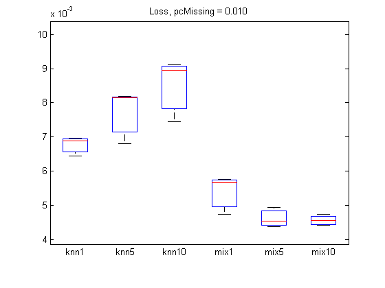
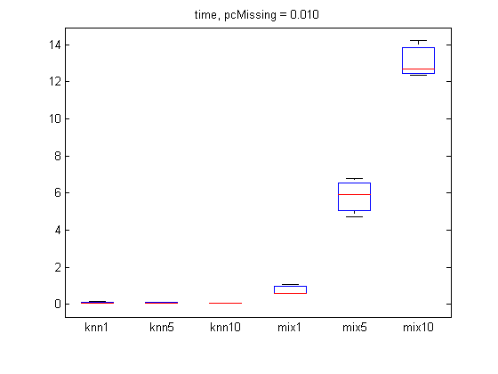
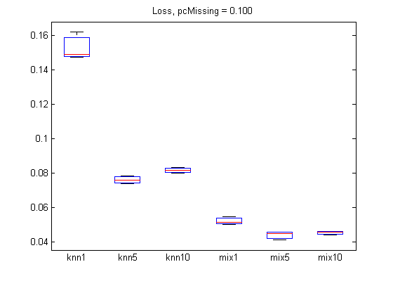
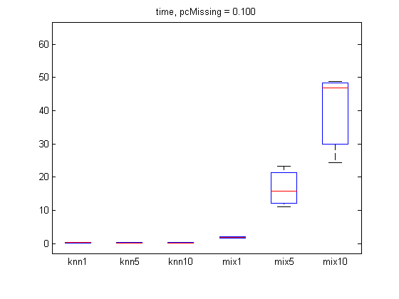

Contents
function imputationMixedAdultDemo()
Comparison of methods for imputing missing values in UCI adult census data
PMTKslow PMTKauthor Kevin Murphy PMTKneedsStatsToolbox boxplot
% This file is from pmtk3.googlecode.com requireStatsToolbox setSeed(0); adult = loadData('adultCensus'); X = adult.X; types = adult.types; % both binary and multinomial are discrete types(types=='m')='d'; types(types=='b')='d'; X = X(1:1000,:); iscont = (types=='c'); X(:,iscont) = standardize(X(:,iscont)); setSeed(0); [N, D] = size(X); pc = [0.01, 0.1]; ntrials = 2; opts = {'verbose', true}; methodNames = {'knn1', 'knn5', 'knn10', ... 'mix1', 'mix5', 'mix10'}; imputeFns = {@(X)imputeKnnMixed(X, 1), ... @(X)imputeKnnMixed(X, 5), ... @(X)imputeKnnMixed(X, 10), ... @(X)imputeMixGaussDiscrete(X, 1, types, opts{:}), ... @(X)imputeMixGaussDiscrete(X, 5, types, opts{:}),... @(X)imputeMixGaussDiscrete(X, 10, types, opts{:}) }; nMethod = length(methodNames);
For each percentage of missing, do several trials
for pidx = 1:length(pc) errors = zeros(ntrials, nMethod); times = zeros(ntrials, nMethod); for trial = 1:ntrials missing = rand(N,D) < pc(pidx); Xmiss = X; Xmiss(missing) = NaN; for method = 1:nMethod fn = imputeFns{method}; tic fprintf('p %3.5f, trial %d, method %s\n', pc(pidx), trial, methodNames{method}); Ximpute = fn(Xmiss); t=toc; times(trial, method) = t; errors(trial, method) = imputationLossMixed(X, Ximpute, missing, types); end end % Plot figure; boxplot(errors, 'labels', methodNames); title(sprintf('Loss, pcMissing = %5.3f', pc(pidx))); printPmtkFigure(sprintf('imputationMixedAdultError%dpc', pc(pidx)*100)); figure; boxplot(times, 'labels', methodNames); title(sprintf('time, pcMissing = %5.3f', pc(pidx))); printPmtkFigure(sprintf('imputationMixedAdultTime%dpc', pc(pidx)*100)); end
p 0.01000, trial 1, method knn1 p 0.01000, trial 1, method knn5 p 0.01000, trial 1, method knn10 p 0.01000, trial 1, method mix1 initializing model for EM 1 loglik: -25318.5 2 loglik: -15530.9 3 loglik: -15529.9 p 0.01000, trial 1, method mix5 initializing model for EM 1 loglik: -21643.9 2 loglik: -14922.4 3 loglik: -14445.6 4 loglik: -14114.1 5 loglik: -13870.9 6 loglik: -13685.9 7 loglik: -13566 8 loglik: -13495 9 loglik: -13461.4 10 loglik: -13434.6 11 loglik: -13417.3 12 loglik: -13406.9 13 loglik: -13399.9 14 loglik: -13394.1 15 loglik: -13388.7 16 loglik: -13382.2 17 loglik: -13367.7 18 loglik: -13352.3 19 loglik: -13331 20 loglik: -13304.2 21 loglik: -13224.4 22 loglik: -13066 23 loglik: -12668.4 24 loglik: -12009.6 25 loglik: -10937 26 loglik: -10298.4 27 loglik: -10200.6 28 loglik: -10179.9 29 loglik: -10163.2 30 loglik: -10160.8 31 loglik: -10160.8 p 0.01000, trial 1, method mix10 initializing model for EM 1 loglik: -20799.9 2 loglik: -14580.9 3 loglik: -13784.9 4 loglik: -13389.7 5 loglik: -13164.6 6 loglik: -13011.3 7 loglik: -12905.4 8 loglik: -12835.8 9 loglik: -12775.6 10 loglik: -12727.7 11 loglik: -12691.1 12 loglik: -12655.1 13 loglik: -12609 14 loglik: -12561.7 15 loglik: -12509.3 16 loglik: -12434.2 17 loglik: -12284.5 18 loglik: -12004.1 19 loglik: -11703.3 20 loglik: -11297.4 21 loglik: -11077.1 22 loglik: -10684.8 23 loglik: -10430.9 24 loglik: -10328.3 25 loglik: -10176.9 26 loglik: -9461.55 27 loglik: -9021.87 28 loglik: -8975.01 29 loglik: -8957.88 30 loglik: -8932.04 31 loglik: -8923.51 32 loglik: -8921.1 33 loglik: -8917.13 34 loglik: -8910.42 35 loglik: -8898.25 36 loglik: -8892.96 37 loglik: -8891.46 38 loglik: -8890.55 39 loglik: -8889.7 p 0.01000, trial 2, method knn1 p 0.01000, trial 2, method knn5 p 0.01000, trial 2, method knn10 p 0.01000, trial 2, method mix1 initializing model for EM 1 loglik: -24569.2 2 loglik: -15485.4 3 loglik: -15485.2 p 0.01000, trial 2, method mix5 initializing model for EM 1 loglik: -20274.6 2 loglik: -14848.4 3 loglik: -14334.4 4 loglik: -13935.9 5 loglik: -13693.1 6 loglik: -13576.7 7 loglik: -13511.7 8 loglik: -13480.7 9 loglik: -13459.6 10 loglik: -13435.4 11 loglik: -13426.4 12 loglik: -13421.5 13 loglik: -13416.6 14 loglik: -13411.3 15 loglik: -13405.5 16 loglik: -13400.4 17 loglik: -13396.5 18 loglik: -13391.7 19 loglik: -13384.6 20 loglik: -13379.4 21 loglik: -13375.4 22 loglik: -13370.6 23 loglik: -13364.3 24 loglik: -13358.5 25 loglik: -13350.3 26 loglik: -13345.4 27 loglik: -13334.3 28 loglik: -13324.3 29 loglik: -13312.8 30 loglik: -13272.9 31 loglik: -13260.2 32 loglik: -13256.1 33 loglik: -13244.8 34 loglik: -13242.9 35 loglik: -13241.9 p 0.01000, trial 2, method mix10 initializing model for EM 1 loglik: -19992.9 2 loglik: -14180.8 3 loglik: -13563.8 4 loglik: -13176.3 5 loglik: -12951.3 6 loglik: -12860.6 7 loglik: -12814.5 8 loglik: -12785.3 9 loglik: -12765.8 10 loglik: -12747 11 loglik: -12726.7 12 loglik: -12697.7 13 loglik: -12669.2 14 loglik: -12636.2 15 loglik: -12597.8 16 loglik: -12547.8 17 loglik: -12476 18 loglik: -12382.4 19 loglik: -12116.3 20 loglik: -11771.2 21 loglik: -11073.2 22 loglik: -9920.2 23 loglik: -8814.97 24 loglik: -8045.15 25 loglik: -7815.25 26 loglik: -7723.2 27 loglik: -7500.79 28 loglik: -7111.14 29 loglik: -6949.81 30 loglik: -6872.7 31 loglik: -6816.45 32 loglik: -6782.79 33 loglik: -6762.4 34 loglik: -6608.82 35 loglik: -6175.76 36 loglik: -5962.44 37 loglik: -5925.09 38 loglik: -5884.63 39 loglik: -5806.6 40 loglik: -5783.32 41 loglik: -5764.26 42 loglik: -5762.13 43 loglik: -5761.24 44 loglik: -5760.81 p 0.10000, trial 1, method knn1 p 0.10000, trial 1, method knn5 p 0.10000, trial 1, method knn10 p 0.10000, trial 1, method mix1 initializing model for EM 1 loglik: -21449.6 2 loglik: -15754.3 3 loglik: -15743.1 4 loglik: -15743 p 0.10000, trial 1, method mix5 initializing model for EM 1 loglik: -21388 2 loglik: -15607.2 3 loglik: -15296.1 4 loglik: -15086.4 5 loglik: -14978.5 6 loglik: -14890.4 7 loglik: -14784.1 8 loglik: -14668.5 9 loglik: -14587.7 10 loglik: -14526.2 11 loglik: -14460.6 12 loglik: -14388.8 13 loglik: -14291.7 14 loglik: -14124.8 15 loglik: -13896.1 16 loglik: -13404 17 loglik: -12746 18 loglik: -12061.8 19 loglik: -11445.1 20 loglik: -10870.3 21 loglik: -10507 22 loglik: -10438.7 23 loglik: -10432.7 24 loglik: -10431.3 25 loglik: -10430.1 26 loglik: -10428.7 27 loglik: -10427.7 p 0.10000, trial 1, method mix10 initializing model for EM 1 loglik: -20011.5 2 loglik: -14981.8 3 loglik: -14337.8 4 loglik: -13908.9 5 loglik: -13633.6 6 loglik: -13466.8 7 loglik: -13367.5 8 loglik: -13317.7 9 loglik: -13289.3 10 loglik: -13271 11 loglik: -13255.3 12 loglik: -13242.1 13 loglik: -13224.7 14 loglik: -13198.9 15 loglik: -13163.8 16 loglik: -13044.3 17 loglik: -12763.6 18 loglik: -12396 19 loglik: -11895.9 20 loglik: -11355.7 21 loglik: -10873 22 loglik: -10470.6 23 loglik: -10209.2 24 loglik: -10046 25 loglik: -9862.44 26 loglik: -9601.96 27 loglik: -9411.88 28 loglik: -9173.93 29 loglik: -8981.35 30 loglik: -8829.54 31 loglik: -8718.48 32 loglik: -8628 33 loglik: -8544.22 34 loglik: -8484.31 35 loglik: -8440.69 36 loglik: -8410.79 37 loglik: -8395.93 38 loglik: -8388.63 39 loglik: -8385.01 40 loglik: -8379.28 41 loglik: -8378.05 42 loglik: -8377.46 p 0.10000, trial 2, method knn1 p 0.10000, trial 2, method knn5 p 0.10000, trial 2, method knn10 p 0.10000, trial 2, method mix1 initializing model for EM 1 loglik: -22076.5 2 loglik: -15638.7 3 loglik: -15622.2 4 loglik: -15622 p 0.10000, trial 2, method mix5 initializing model for EM 1 loglik: -22179.3 2 loglik: -15184.3 3 loglik: -14859.1 4 loglik: -14671.5 5 loglik: -14474 6 loglik: -14285.9 7 loglik: -14164.2 8 loglik: -14089.5 9 loglik: -14040.4 10 loglik: -14014.3 11 loglik: -14004.4 12 loglik: -13997.2 13 loglik: -13990.7 14 loglik: -13985.1 15 loglik: -13977.9 16 loglik: -13972.1 17 loglik: -13969.9 18 loglik: -13968.4 19 loglik: -13965.3 20 loglik: -13963.2 21 loglik: -13961.7 22 loglik: -13959.9 23 loglik: -13957.9 24 loglik: -13955.9 25 loglik: -13953.7 26 loglik: -13951.4 27 loglik: -13948.8 28 loglik: -13946.1 29 loglik: -13944 30 loglik: -13942.7 p 0.10000, trial 2, method mix10 initializing model for EM 1 loglik: -19706.1 2 loglik: -15024.6 3 loglik: -14522.2 4 loglik: -14210.9 5 loglik: -14028.4 6 loglik: -13909.6 7 loglik: -13823.2 8 loglik: -13757.6 9 loglik: -13712.1 10 loglik: -13669.7 11 loglik: -13632.3 12 loglik: -13589.3 13 loglik: -13548.2 14 loglik: -13525 15 loglik: -13503.5 16 loglik: -13473.6 17 loglik: -13387.3 18 loglik: -13247 19 loglik: -13025.5 20 loglik: -12554.7 21 loglik: -11764 22 loglik: -10708.8 23 loglik: -9968.08 24 loglik: -9847.37 25 loglik: -9807.93 26 loglik: -9753.1 27 loglik: -9667.23 28 loglik: -9453.64 29 loglik: -9285.59 30 loglik: -9205.62 31 loglik: -9114.95 32 loglik: -8831.57 33 loglik: -8490.34 34 loglik: -8406.21 35 loglik: -8315.23 36 loglik: -8235.94 37 loglik: -8167.61 38 loglik: -8077.51 39 loglik: -7965.41 40 loglik: -7858.72 41 loglik: -7745.49 42 loglik: -7607.4 43 loglik: -7523.34 44 loglik: -7484.1 45 loglik: -7422.06 46 loglik: -7338.19 47 loglik: -7281.95 48 loglik: -7237.29 49 loglik: -7180.69 50 loglik: -7163.87 51 loglik: -7149.82   
end function [Ximpute, model] = imputeMixGaussDiscrete(Xmiss, K, types, varargin) % Impute NaN entries in Xmiss using a GaussDiscrete mixture model % Optional arguments are the same as mixGaussMissingFitEm % This file is from pmtk3.googlecode.com if nargin < 2, K = 5; end model = mixGaussDiscreteMissingFitEm(Xmiss, K, types, varargin{:}); Ximpute = mixGaussDiscreteImpute(model, Xmiss); end